② 点击确定，如果您输入的台号还没有下单，点餐机会提示相应的信息，如下图所示：

③ 如果你输入的台号已经下单，则进入结帐界面，如下图所示：
提示：在结帐界面中，会显示就餐的人数，客人所点的菜信息和合计金额
④ 确认结帐的信息无误后，选择“提交”，完成结帐，如下图所示：
| ID | 版本号 | 作者 | 修改 |
| 1 | v0.9.2 | Ying.Zhang | 帮助文档的第一版 |
| 2 | v0.9.3 | Ying.Zhang | ①添加了功能设置的说明帮助 ②修改了网络设置的说明帮助 |
| 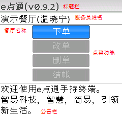 |
|
标题栏 : 显示产品名称和版本信息 餐厅名称 : 手持终端登录成功后，显示终端所挂载的餐厅名称 服务员姓名 : 手持终端登录成功后，显示持有终端的服务员姓名 点餐功能 : 手持终端提供的点餐功能，每个功能的使用说明将会在下面的章节中介绍 公告栏信息 : 显示由数据中心推送到每台手持终端的信息 目录 |
| ① 在主界面选择“下单”，弹出输入提示框，如下图所示： |
| 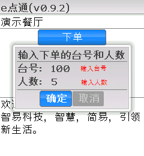 |
② 输入准备下单的台号和就餐人数，点击“确定”进入下单界面，如下图所示： |
| 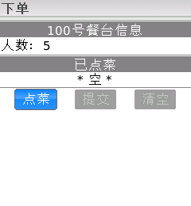 |
③ 选择“点菜”，弹出提示框后输入点菜的数量和菜编号，如下图所示： 提示： 数量的输入范围是0.01～99.99； 当输入菜编号时，下方的菜列表会自动进行模糊匹配，让您更快的选择所需的菜品； |
| 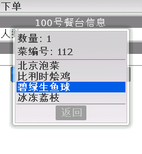 |
④ 根据客人点菜要求，重复上述的步骤完成菜品的选择，选择“返回”，显示下单的详细信息，如下图所示： |
| 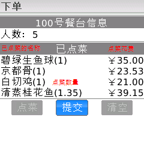 |
⑤ 如果想删除某个已点菜，滚动光标到对应的菜品，点击确认，如下图所示： |
| 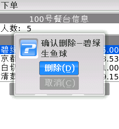 |
⑥ 如果想修改就餐人数，把光标移动到人数，输入新的就餐人数，如下图所示： |
| 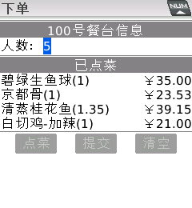 |
⑦ 确认就餐人数和点菜信息无误后，选择“提交”，完成下单，如下图所示： |
| 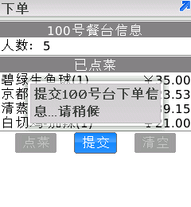 |
目录 |
| ① 在主界面选择“改单”，弹出输入提示框，输入您要修改的台号，如下图所示： |
| 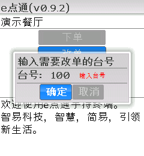 |
② 如果您要修改的台号目前还没有下单，点餐机会给您相应的提示，如下图所示： |
| 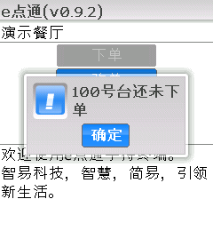 |
③ 如果您要修改的台号已经下单，则会进入改单界面，如下图所示： 提示：在改单界面中，您可以修改就餐人数，添加客人新点的菜色和删除客人不喜欢的菜色。 |
| 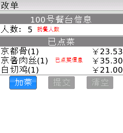 |
④ 如果您要修改就餐人数，把光标移到人数上，输入新的就餐人数，如下图所示： |
| 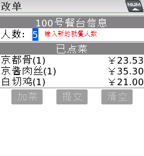 |
⑤ 如果您要从已点菜中删除客人不喜欢的菜色，把光标相应的菜名中，点击确定，如下图所示： |
| 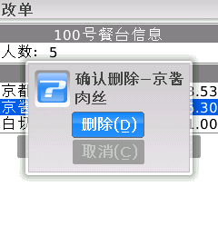 |
⑥ 如果您要添加客人新点的菜色，选择加菜，如下图所示： 提示：改单时选择新增菜的方法跟下单是一样的，输入菜品编号是最快捷的方式喔:-) |
| 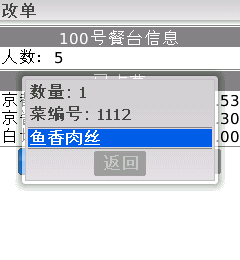 |
⑦ 确认就餐人数和客人点菜无误之后，选择“提交”，完成改单，如下图所示： |
| 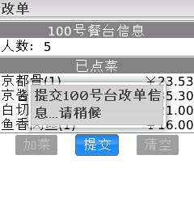 |
| ① 在主界面选择“删单”，弹出提示框，输入要删除的台号，如下图所示： |
② 点击“确定”后，如果您输入的台号还没有下单，点餐机会提示您相应的信息，如下图所示： |
| 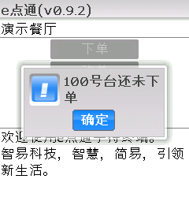 |
③ 如果您输入的台号已经下单，点餐机进行删单操作，完成删单，如下图所示： |
| 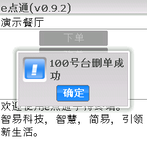 |
| ① 在主界面选择“结帐”，弹出提示框，输入要结帐的台号，如下图所示： |
| 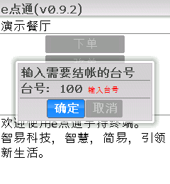 |
② 点击确定，如果您输入的台号还没有下单，点餐机会提示相应的信息，如下图所示： |
|
③ 如果你输入的台号已经下单，则进入结帐界面，如下图所示： 提示：在结帐界面中，会显示就餐的人数，客人所点的菜信息和合计金额 |
| 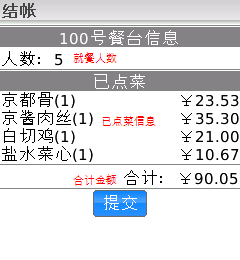 |
④ 确认结帐的信息无误后，选择“提交”，完成结帐，如下图所示： |
| 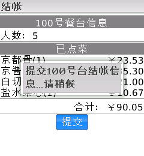 |
用户通过e点通®餐饮管理平台的会员中心，更改了店铺的菜谱，无线点餐机有两种方式实时的与会员中心同步菜谱信息
|
自动更新每次进入e点通®无线点餐机主界面时，点餐机都与会员中心同步菜谱信息，确保您得到店铺的最新菜谱，如下图所示： |
| 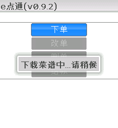 |
手动更新进入主界面，选择功能菜单的“更新菜谱”，手动的与会员中心同步菜谱信息，如下图所示： |
| 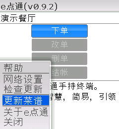 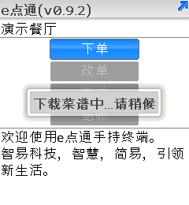 |
e点通®无线点餐机可以通过无线网络，进行在线的系统升级，在线升级也是有两种方式
|
自动升级① 每次进入e点通®无线点餐机主界面时，点餐机会自动的进行在线升级，如下图所示： |
 |
手动升级① 进入主界面，选择功能菜单的“检查更新”，点餐机会手动的进行在线升级，如下图所示： |
| 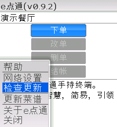 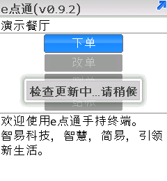 |
② 自动升级时，如果您当前使用的点餐机系统是最新版本，则直接通过检查。而在手动升级时，则会给您相应的提示，如下图所示： |
| 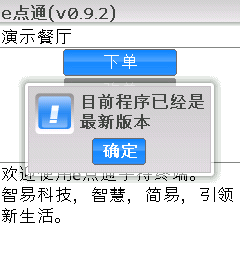 |
升级系统① 如果检测到更新的版本，点餐机会提示您进行系统更新，如下图所示： |
| 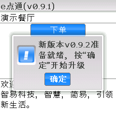 |
② 选择确定，进入新程序的下载界面，如下图所示： |
| 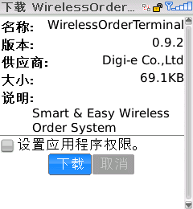 |
③ 选择下载，开始下载新程序，下载完成后，系统提示下载完成，是否重启机器以便让新版本生效，如下图所示： |
 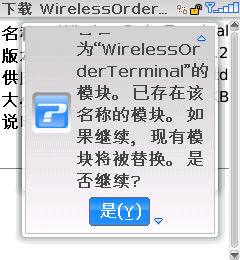 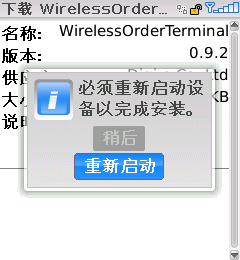 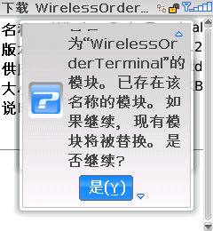 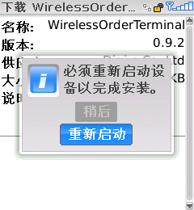 |
注意：下载完成后，请选择“重新启动”，以便使新版本生效， 如果选择“稍后”，则需要手动的拔掉电池，让点餐机重启。 |
| ① e点通®无线点餐机可以使用移动网络或者WiFi，与e点通®数据中心通信，通过简单的设定，就可以完成无线点餐机的网络设置，在主界面中选择“网络设置”，进入网络设置界面，如下图所示： |
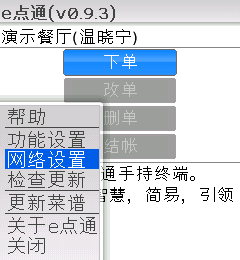 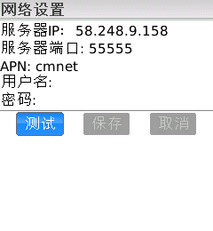 |
| 服务器IP设定e点通®数据后台的IP地址 |
| 服务器端口设定e点通®数据后台的端口 |
| APN设定您所使用的移动运营商的接入点名称 |
| 用户名和密码设定访问移动运营商网络用户名和密码 |
| 注意： 服务器IP和服务器端口由智易科技提供。 APN、用户名和密码都由移动运营商提供。 提示： 如果是使用中国移动的SIM Card，一般只需要设定APN为“cmnet”就可以直接使用了。 |
② 输入了所有的网络参数后，可以选择“测试网络”，来进行网络的测试，如果网络连接成功，则如下图所示： |
 |
③ 确定所输入的网络参数无误后，选择“确定”，如下图所示： |
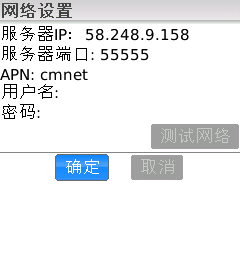 |
| 在主界面中选择“功能设置”，进入功能设置界面，如下图所示： |
| 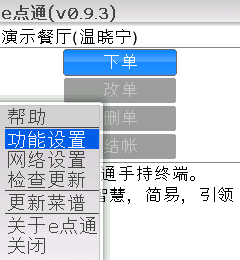 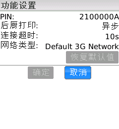 |
①显示PIN值，每台e点通®无线点餐机都有唯一的PIN值作为标记。通过这个PIN值，您可以在e点通®会员中心查看到所有与这个PIN匹配的无线点餐机的信息，比如当前的使用状态，账单的信息等，如下图所示： |
| 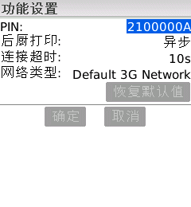 |
②设置后厨打印的方式，后厨打印有两种方式（如下图所示）：
|
| 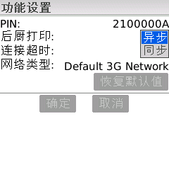 |
| 小提示：我们推荐使用“异步”的后厨打印方式。一般来说，后厨打印只有在网络完全断掉的情况才会出现问题，并且 e点通®打印服务的自动恢复机制，可以在网络修复后自动恢复到正常的工作状态，因此您可以放心的是后厨打印出问题的概率是很小的喔：-） |
③设置连接超时的时间，连接超时的时间可以有3个选择：10秒、15秒和20秒，根据当前网络的质量来选择合适的超时时间，如下图所示： |
| 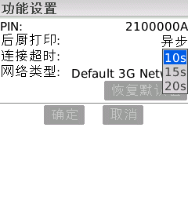 |
| 小提示：一般来说，选择10s作为超时时间已经足够，除非碰到非常情况，或者当地的网络质量实在不怎么样，您才需要设置更长的超时时间咯：-） |
④设置网络类型，您可以选择两种网络类型（如下图所示）：
|
| 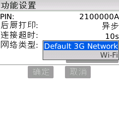 |
| 小提示：一般来说，您都会选择移动运营商的网络，除非是您已经部署了自己的无线局域网。 |
⑤如果想恢复默认设置，选择“恢复默认值”，如下图所示： |
| 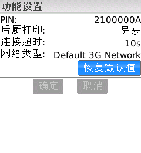 |
| 小提示：一般来说，默认的功能设置已经可以满足绝大部分的场合，除非您是在特殊的环境下，否则使用默认的功能设置就可以的咯：-） |
⑥最后，选择“确定”，保存功能设置并返回到主界面，如下图所示： |
| 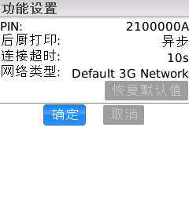 |
目录 |